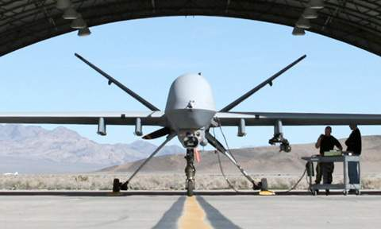

A drone, in a technological context, is an unmanned aircraft. Drones are more formally known as unmanned aerial vehicles (UAV). Essentially, a drone is a flying robot. The aircraft may be remotely controlled or can fly autonomously through software-controlled flight plans in their embedded systems working in conjunction with GPS. UAVs have most often been associated with the military but they are also used for search and rescue, surveillance, traffic monitoring, weather monitoring and firefighting, among other things.
